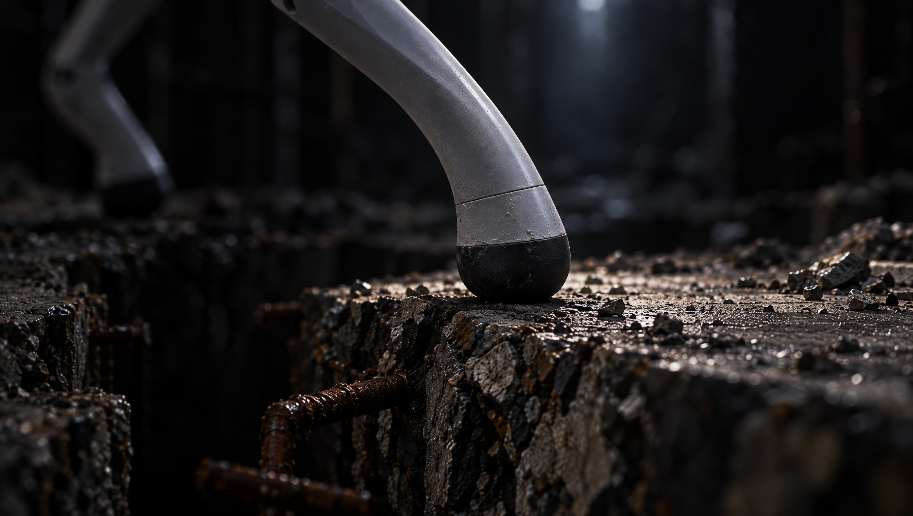
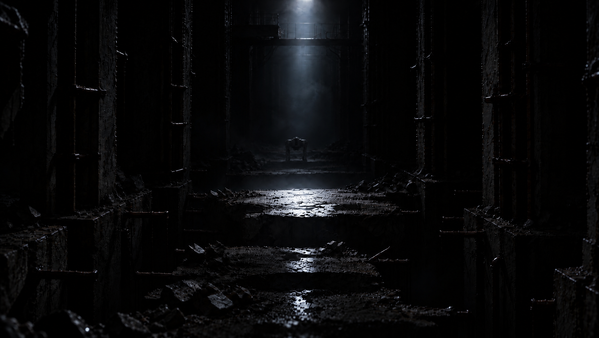
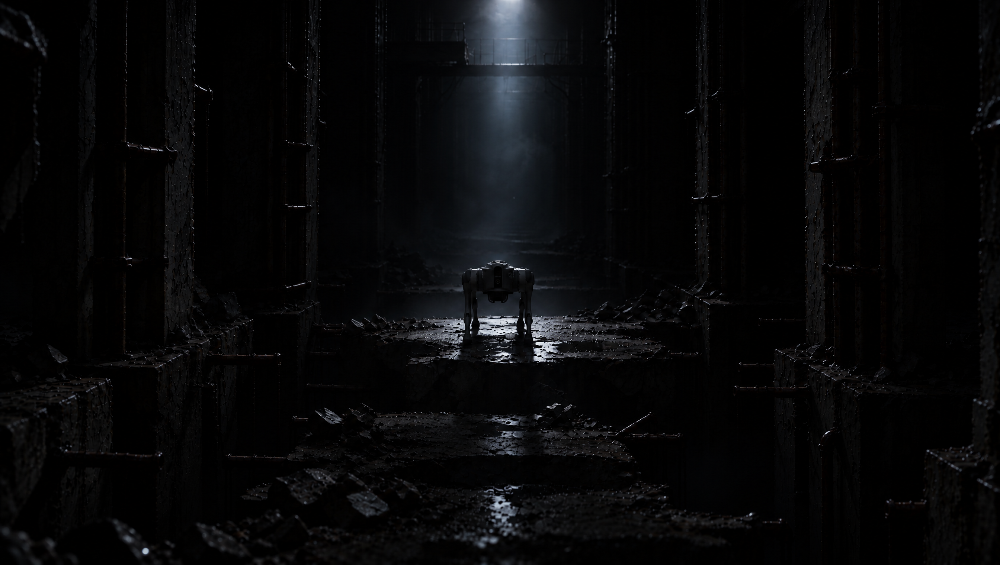
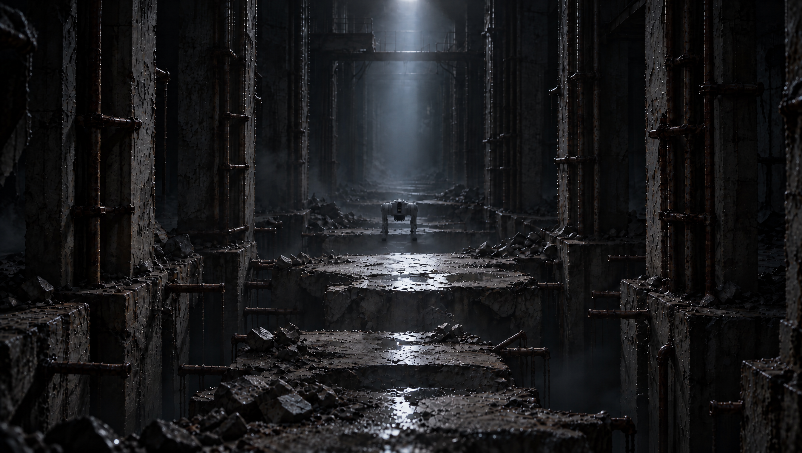
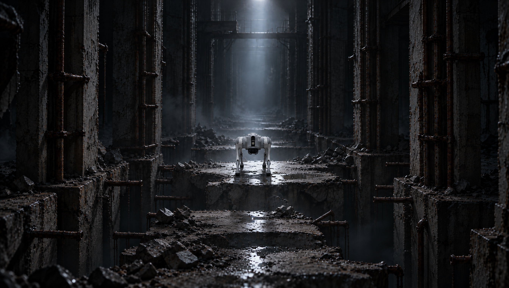
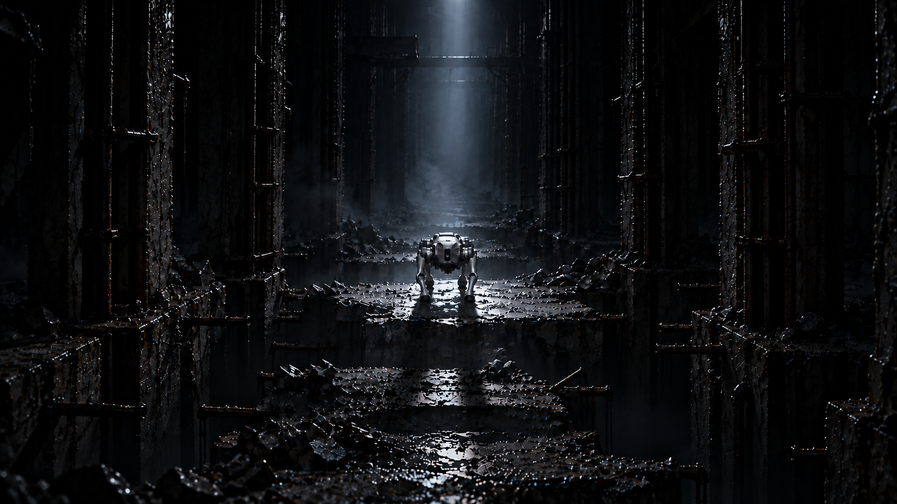
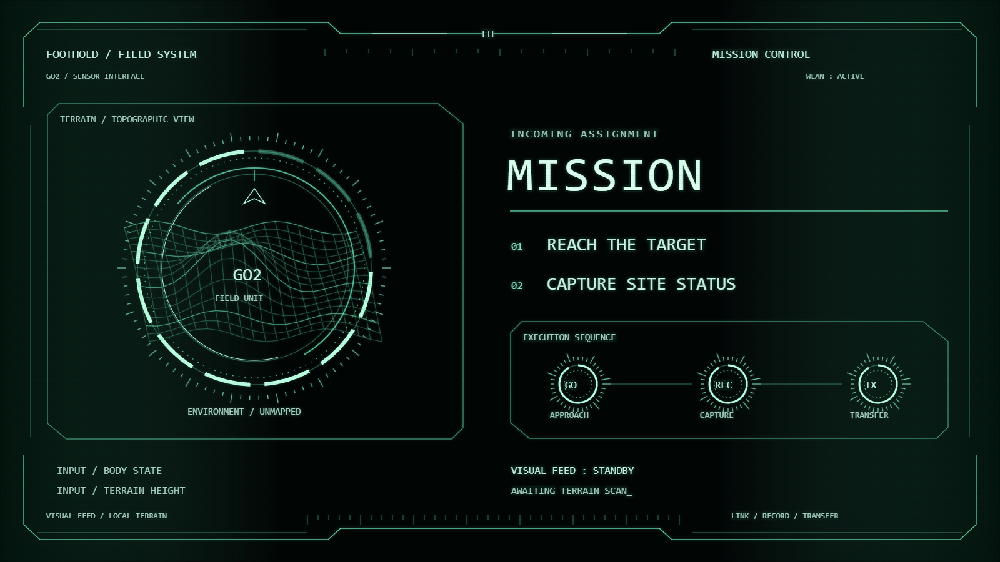
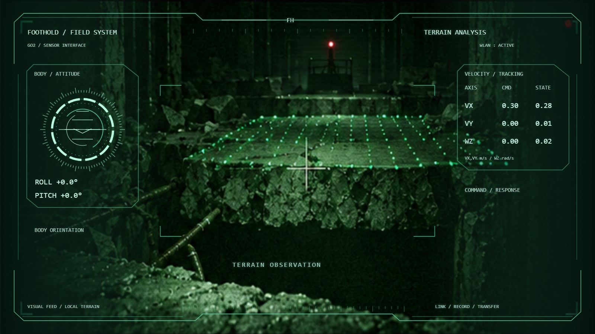
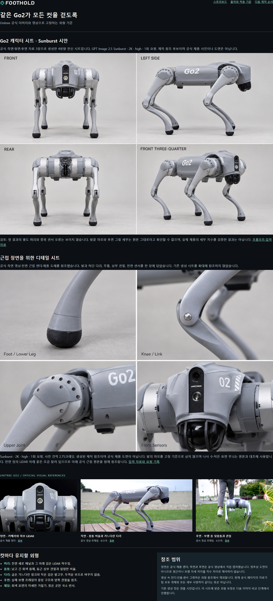

전체 연결본 · 80.6초 · 최신 교체본
새 O1 좌우 탐색, O1→O2 바닥·조명 연결 보정, E5pre 정지 꼬리 제거·접지음과 POV→E5 화면 구도 연결 보정을 반영했습니다. 끝의 브랜드 클로징도 포함합니다. 기존 배경음 믹스는 유지했으며 별도 영화 음악과 최종 통합 믹싱은 아직 완료 전입니다.
오프닝 8컷 · 엔딩 9컷과 공개 전 실루엣 키프레임 · 별도 Q&A. 깊은 틈 컷 유지, E2 중앙 중경 배치, E5pre 보행 POV·뒤에서 턱 오르기·정면에서 앉기, 적색 완료 화면을 반영했습니다. 이미지를 누르면 확대됩니다. 영상이 나온 컷은 아래 ‘영상 재생’ 버튼으로 이 화면에서 볼 수 있습니다.
이번 화면은 연출 확인용입니다. 관측 수치는 실측 로그가 아닌 연출용 예시입니다. 지형 scan과 CV 표시는 콘셉트이며, 전송 진행률·촬영 시간은 시나리오 예시입니다. O7 발 영상과 E2 영상, 두 컷의 연결 편집본을 제작했습니다. 전체 480p 연결본과 임시 효과음·저음 믹스가 상단에 있습니다. 별도 영화 음악 제작은 미완료입니다. 전체 화면 편집 후 사운드를 구성하고 발표용 두 영상으로 분리했습니다.
전체본과 발표용 Opening·Ending을 아래에서 재생할 수 있습니다. 동일한 임시 효과음·저음 믹스가 포함된 480p 검토본입니다.
새 O1 좌우 탐색, O1→O2 바닥·조명 연결 보정, E5pre 정지 꼬리 제거·접지음과 POV→E5 화면 구도 연결 보정을 반영했습니다. 끝의 브랜드 클로징도 포함합니다. 기존 배경음 믹스는 유지했으며 별도 영화 음악과 최종 통합 믹싱은 아직 완료 전입니다.
정지 꼬리를 제거한 상태에서 E5 시작의 목표 설비 위치를 POV 끝에 가깝게 맞췄습니다. 처음 약 0.8초 동안 원래 후면 구도로 부드럽게 풀리며, 오르는 동작과 접지음 타이밍은 유지합니다. 아래 6초 영상은 현재 전체본의 같은 구간입니다.
좌우 탐색 뒤 가까운 바닥으로 내려봅니다. O2 시작의 바닥 위치와 빛의 밝기 분포를 O1 끝에 맞추고, 1초 동안 원래 조명 움직임으로 이어지도록 보정했습니다. 아래 영상과 전체본·Opening은 같은 화면과 믹스를 사용합니다.
같은 E4 → E5pre → E5 구간을 BEFORE 14.75초, 짧은 블랙 뒤 AFTER 14.75초 순서로 재생합니다. 원래 POV 영상은 그대로이며 재생성한 외부 Go2 영상은 사용하지 않았습니다. BEFORE는 승인받은 배경음 보정본, AFTER는 같은 배경음에 접지음 8회를 추가한 본입니다. 마지막 보행 이후에는 발소리도 멈춥니다. 전체 영화 음악은 미완료입니다.
블랙과 먼 빨간 점에서 시작해 험지를 탐색하고, 첫걸음과 발걸음 전환까지.
블랙에서 Go2 공개로 이어져 험지 통과, 촬영·전송, MISSION COMPLETE와 암전 뒤 제공받은 브랜드 클로징까지.
검토본은 음향·전체화면·탐색 막대가 있는 플레이어로 제공합니다. Q&A는 별도 발표 슬라이드입니다. 개별 컷은 아래 스토리보드에서 확인합니다.
HUD·scan 6장, E5b 서 있음·앉음, 발표 질문용 밝은 원경은 사용자 승인입니다. 아래 각 컷에 최신 이미지를 반영했습니다. HUD 6종은 대비·재질 보정 v2를 승인 기준으로 사용합니다. O5·E5b의 5초 음향 포함 영상은 각 컷 아래 재생 버튼에서 확인합니다. 영상은 승인 전입니다. E5pre는 보행 POV와 표면 스캔을 영상화해 전체본에 반영했습니다.
최신 연출·승인 기록 · 오프닝 이미지 · 엔딩 이미지 · 밝은 원경
현재 표시: E3·E4 재질 수정 v3. 이전 v2보다 전면 광택을 줄인 최신 생성본입니다. E3의 반사·대비는 추가 확인이 필요하며, 두 컷 모두 최종 승인 전입니다. 아래 버튼으로 그 자리에서 원래 원화와 비교할 수 있습니다.
각 컷 아래와 확대 화면에서 원래 원화를 같은 크기로 비교할 수 있습니다. 이전 파일은 보존합니다.
수정안 v2 · 9초. 마지막 발이 빠질 때 왼쪽부터 빛이 줄고, 오른쪽 디딤면의 여운 뒤 블랙으로 닫힙니다. E2 진입은 짧게 줄였습니다. 보행 속도는 원본 그대로입니다.
생성 모델이 검게 전환한 영상이 아니라 편집으로 만든 연결 시안입니다. 생성 원본의 음향을 임시로 연결했으며 최종 사운드 믹싱 전입니다.

· 생성·편집 기록
Seedance 2.5와 Cinema Studio 3.0을 각 5초·480p·음향 포함으로 생성했습니다. 사용자는 Seedance의 보행과 소리를 선호했고, 이를 연결 시안에 사용했습니다. 최종 영상 채택은 별도 확인합니다.
· 확인 결과
v2의 어두운 공간과 고정광을 유지하고 Go2를 뒤쪽으로 옮겼습니다. 앞쪽 빛이 닿는 자리는 비어 있고, 뒤쪽에 작은 기체가 희미하게 보입니다. 2026-10-01 사용자 승인 완료입니다. 이동 속도·연결은 영상 시험에서 확인합니다. Seedance·Cinema 두 영상 생성 후 위 연결 시안으로 이어졌습니다.

직접 열람: 기체 위치·크기 변화, 기존 자리 비움, 어두운 방과 고정광 유지. 발밑 지지면과 실제 걸음의 연속성은 정지 이미지로 확정하지 않았습니다. 영상 시험에서는 이동으로 드러나는지, 전체 노출 변화로 대신하는지 구분해 봅니다.


배경 노출 고정 지시가 암흑 분위기 요구와 충돌했습니다.
v3 생성 요청과 참조 · 결과와 비용 · 이번 2.75크레딧, E2a 3회 합계 8.25크레딧.
공식 Go2 정면 사진과 승인한 캐릭터·디테일 시트를 적용했습니다. 기존 중앙 중경 구도와 큰 공간을 유지하고, 콘크리트·도장·고무의 반사와 젖은 정도를 구분했습니다. 빛 속에 도착한 상태의 이미지이며 2026-09-30 사용자 승인 완료입니다. 어둠 속 뒤쪽의 새 시작 후보는 위에서 비교할 수 있습니다. 영상은 이 페이지의 재생 버튼으로 볼 수 있습니다.

확인할 부분: Go2 외형, 공간 대비 크기, 자연스러운 재질과 빛. 중경 이미지로 식별하기 어려운 나사·발고무 미세 형상과 실제 관절 동작은 검증 완료가 아닙니다. 그림을 누르면 원본을 엽니다.

기존 원화는 보존합니다. 전면적인 젖은 광택과 이전 로봇 외형은 새 제작의 정본으로 사용하지 않습니다.
실제 생성 요청·참조 · 재질·조명·동작·음향 기준 · Sunburst 2K high 한 장, 사전 견적 2.75크레딧.
E5pre는 보행 POV로 확정됐으며 새 이미지 제작 전입니다. 아래 이미지는 보존한 이전 바닥 카메라안입니다. 기존안에서 E5pre는 로봇 POV가 아닙니다. 고정된 외부 바닥 카메라 뒤에서 Go2가 위를 지나 같은 목표로 이동합니다. E5에서 턱을 오른 뒤 한두 걸음 이동하고 앉기 직전 잘라, E5b 정면에서 앉는 동작으로 연결합니다.
관측 컷은 실제 배경에 기존 HUD와 scan을 배치한 참조 이미지를 먼저 확인하고, 그 상태를 AI 영상으로 움직이는 방식을 우선 시험합니다. 카메라·보행에 반응하는 scan과 수평계·표시 변화를 요청합니다. 모든 HUD를 정지 레이어로 붙이는 방식이 아닙니다.


scan은 발밑에서 앞쪽으로 이어지고, 틈을 고체 바닥처럼 메우지 않도록 요청합니다. 카메라가 움직여도 지형에 붙어 있어야 합니다. 생성 영상의 숫자는 실제 IMU·LiDAR 측정값이 아닙니다. 글자·수치 변형은 시험 결과를 보고 필요한 부분만 후반 합성으로 보완합니다.
영어 UI, 녹색 관측, 붉은 MISSION COMPLETE·100%는 유지합니다. 임무·전송·완료 화면은 정확한 문구와 상태 전환을 별도로 관리합니다. HUD·scan 통합 이미지 6장은 사용자 승인됐습니다. 영상은 아직 생성하지 않았습니다.
공식 제품 이미지와 측면·후면 보행 영상에서 외형을 확인했습니다. 머리 아래 LiDAR, 가느다란 다리, 작은 발고무를 다음 이미지 제작의 공통 기준으로 사용합니다.

최신 승인: HUD·scan 6장, E5b 서 있음·앉음 한 쌍, 발표 질문용 밝은 원경. 새 이미지가 아래 각 컷에 반영됐습니다. O1은 완전 블랙과 먼 빨간 점 두 번 점멸 후 이동광 탐색으로 시작합니다.
이번 추가 이미지 8장: 재질·외형 수정본입니다. 기존 지형·구도 개선안과 구분합니다. O1은 조명 참고용, E5b는 다리·턱 연결 수정 대상입니다. 각 이미지 아래에서 원화와 비교하세요.
국소 이동광의 원경 → 수직에 가까운 바닥 질감 → 가장자리 → 깊은 틈 → 블랙 MISSION → 원경 HUD → 근거리 height scan만 → 발 접촉과 연속 보행.
발 접촉 → 중앙 중경 공개 → 뒤쪽 Follow → 틈 통과 → 보행 POV·턱 표면 스캔 → 뒤에서 턱 오르기 → 정면에서 앉아 응시 → 촬영·전송 → MISSION COMPLETE → 블랙. Q&A는 별도 슬라이드입니다.
이 밝기의 이미지는 본문 설명용입니다. 오프닝에서는 위처럼 어둡게 하고 빛이 닿는 영역만 드러냅니다.
기존 컷을 복원해 연결한 편집 설계입니다. 세부 지형의 공간 연속성은 영상용 시작·끝 프레임에서 맞춥니다.
원본은 컷당 5초를 기본으로 확보하고 필요한 길이를 편집합니다. 하나의 음악적 전개와 공간음, 발소리, 임무 효과음은 화면·영상 문안 확정 후 제작합니다.